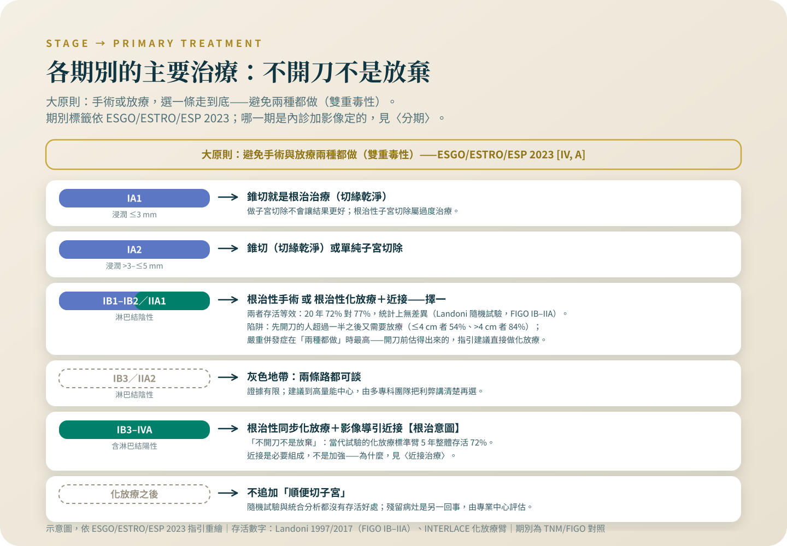

開刀還是放療：不開刀不是放棄
隨機試驗追了二十年，早期兩條路存活沒有差別；真正該避免的是兩種都做——那份試驗裡，手術組有 64% 最後又做了放療。
這一篇同時對兩種讀者寫：被安排化放療、懷疑自己是不是沒救了的人，和堅持要開刀、不知道腫瘤 2 到 4 公分的人開完刀約半數還要再補治療的人。答案不在哪一科，在你的病理報告那五個欄位裡。
先說我的位置：根治性化放療與近接治療是我自己每天在做的治療。所以這個專題裡關於放療的每一句話，我寫得比別人更保守，不是更熱。
「醫師說我不用開刀，直接做放療——是不是代表已經不能開了？」這句話我在診間聽過太多次，問的人常常已經在走廊哭過一場。所以結論放在最前面：不開刀不是放棄。在子宮頸癌，「開刀還是放療」是依期別與腫瘤條件分工的結果，不是病情絕望程度的排名。這一篇把分工背後的證據攤開，包括一個很少被講清楚的重點：選錯邊的代價，往往不是「效果差」，而是「兩種治療都做了」。
早期：兩條路，隨機試驗追了二十年
義大利的 Landoni 試驗在 1986 到 1991 年間，把 343 名第 IB 到 IIA 期（當年的 FIGO 分期）病人隨機分派去根治性手術或根治性放療，1997 年發表：5 年整體存活兩組都是 83%、無病存活都是 74%[1]。2017 年的 20 年更新，最短追蹤 19 年：整體存活手術組 72%、放療組 77%，統計上沒有差異（p=0.280）；多變項分析裡決定存活的是組織型態、腫瘤大小、淋巴結——不是選了哪一種治療[2]。作者隔了二十年寫下的結論是同一句：早期子宮頸癌沒有「首選治療」。要提醒一件事：那是三十多年前的手術與放療，兩邊的技術今天都更好，這個「等效」讀的是方向，不是你今天的精確機率[1][2]。
同一份資料裡，更關鍵的數字其實是 64%
Landoni 試驗的手術組，有 64%（169 人裡的 108 人）在術後因為病理條件又接受了放療：腫瘤 4 公分以下的人是 54%、超過 4 公分的是 84%[1]。嚴重併發症：手術組 28%、放療組 12%（p=0.0004），作者的原文是「手術加放療的組合，副作用最重」[1]。所以「兩邊等效」與「雙重治療的問題」是同一份資料的兩面：在不適合的條件下堅持先開刀，常常換到的是兩種治療的毒性、一種治療的療效。歐洲三學會（ESGO/ESTRO/ESP）2023 年指引把這件事寫成治療策略的原則：應避免根治性手術與放療的組合；如果診斷時就看得出術後會需要輔助治療，應該直接做根治性化放療加近接治療，不要先開[3]。這是指引白紙黑字的原則，不是科別之間的立場。

開完刀為什麼常要補？補了又換到什麼？
術後要不要補，看的是病理報告。中風險（GOG 92 試驗的條件：深層基質侵犯、脈管侵犯、腫瘤較大這三項裡至少兩項）：輔助放療把復發從 28% 降到 15%，復發風險大約砍半（相對風險 0.53——相對風險是把兩組發生機率相除）[4]。但 2006 年的長期追蹤要照實寫：整體存活的風險比 0.70 並未達統計顯著（p=0.074）——風險比（HR）是把兩組事件發生的速度相除，0.70 偏向有利，但沒有跨過統計的門檻，所以輔助放療的好處，證據能寫到的層級是「減少復發」，不是「延長壽命」[5]。高風險（淋巴結轉移、切緣陽性、子宮旁侵犯）就不只補放療：Peters 試驗顯示術後化放療的 4 年整體存活是 81%，單補放療是 71%[6]。這件事有多常見？三個手術資料庫合起來、675 名 FIGO 2018 分期 IB2（2 到 4 公分）接受根治性子宮切除的病人，51% 術後接受了輔助治療[7]。開刀之前，這個機率常常就估得出來——這正是指引要求先估、估得出來就直接做化放療的理由[3]。
局部晚期：化放療是根治意圖，數字攤在這裡
IB3 以上的局部晚期，ESGO 2023 的標準是根治性同步化放療（證據等級 I, A），影像導引近接治療是它的必要組成[3]。「不開刀不是放棄」不能只是口號，要有數字：retroEMBRACE 這個 12 中心世代收了 731 名局部晚期病人，5 年整體存活 65%[8]；EMBRACE-I 前瞻研究 1,341 人交出同方向的成績[9]；當代隨機試驗 INTERLACE 裡「只做標準化放療」的那一組，5 年整體存活 72%[10]。這是根治性治療的成績單。近接治療為什麼取代不了、那幾天實際怎麼過，整篇寫在〈近接治療：名字最可怕，那幾天最關鍵〉；為什麼放療期間要配每週化療，寫在〈為什麼放療期間每週還要打化療〉。
「化放療做完，順便把子宮拿掉」——試過了，沒有比較好
GOG 71 試驗把 256 名 4 公分以上的 IB 期病人隨機分派，比較放療單獨與放療加筋膜外子宮切除：存活沒有統計差異，作者的原文是「整體而言，沒有臨床上重要的好處」[11]。Cochrane 2022 年的統合也一樣：先化療再開刀對上化放療，整體存活風險比 0.94、沒有差異，而兩個試驗合併起來，開刀那組的 5 年無病存活反而較差（57% 對 65.6%）[12]。ESGO 指引明確寫著不建議[3]。「有開到刀才安心」在這裡沒有證據站得住。
沒有贏家，只有各自的主場
把這篇讀成「放療比手術好」，跟把它讀成「開得了刀才算根治」，都是誤讀。適合手術的早期病人去開刀，一種治療就結束，是好結果；局部晚期病人做根治性化放療，一樣是奔著治癒去的，不是退而求其次。真正的灰色地帶是 IB3／IIA2 且淋巴結陰性這一格——指引自己承認證據有限，要求把兩種選項的利弊都攤開、由多專科團隊討論，並建議轉到有這種團隊的中心[3]。所以這個決定的正確打開方式，是讓婦癌科與放射腫瘤科都看過你的資料，兩邊都聽過，再決定。
去談之前，把這五個欄位找出來
決定這一題的資料，其實就在你手上的報告裡。病理或切片報告：組織型態（鱗癌或腺癌）、腫瘤大小、脈管侵犯（LVSI）、基質侵犯深度；影像報告：MRI 量到的腫瘤大小與淋巴結狀態。這五個欄位正是 Landoni 多變項分析與指引風險分層在用的東西[2][3]。台灣端：子宮頸癌根除性子宮切除（80413B）與近接治療都是健保支付標準裡明列的項目[13]，細部給付條件與自付項目，向醫務課或個管師確認。把資料湊齊之後，這句話要問出口：「以我的期別和腫瘤條件，如果先開刀，術後需要再補放療或化放療的機率有多高？」如果答案超過一半，帶著這一篇的第二節，跟兩科都談過再決定。
被告知做化放療的你，請把「根治意圖」四個字記住——那是治癒的路線，不是安慰。下次門診帶著病理與影像報告，問一句：以我的條件先開刀，之後要補治療的機率多高？
參考資料
Landoni, F., Maneo, A., Colombo, A., et al. (1997). Randomised study of radical surgery versus radiotherapy for stage Ib-IIa cervical cancer. Lancet, 350(9077), 535-540. DOI: 10.1016/s0140-6736(97)02250-2
Landoni, F., Colombo, A., Milani, R., Placa, F., Zanagnolo, V., & Mangioni, C. (2017). Randomized study between radical surgery and radiotherapy for the treatment of stage IB-IIA cervical cancer: 20-year update. Journal of Gynecologic Oncology, 28(3), e34. DOI: 10.3802/jgo.2017.28.e34
Cibula, D., Raspollini, M. R., Planchamp, F., et al. (2023). ESGO/ESTRO/ESP Guidelines for the management of patients with cervical cancer — Update 2023. International Journal of Gynecological Cancer, 33(5), 649-666. DOI: 10.1136/ijgc-2023-004429
Sedlis, A., Bundy, B. N., Rotman, M. Z., Lentz, S. S., Muderspach, L. I., & Zaino, R. J. (1999). A randomized trial of pelvic radiation therapy versus no further therapy in selected patients with stage IB carcinoma of the cervix after radical hysterectomy and pelvic lymphadenectomy: A Gynecologic Oncology Group Study. Gynecologic Oncology, 73(2), 177-183. DOI: 10.1006/gyno.1999.5387
Rotman, M., Sedlis, A., Piedmonte, M. R., et al. (2006). A phase III randomized trial of postoperative pelvic irradiation in Stage IB cervical carcinoma with poor prognostic features: follow-up of a gynecologic oncology group study. International Journal of Radiation Oncology, Biology, Physics, 65(1), 169-176. DOI: 10.1016/j.ijrobp.2005.10.019
Peters, W. A. 3rd, Liu, P. Y., Barrett, R. J. 2nd, et al. (2000). Concurrent chemotherapy and pelvic radiation therapy compared with pelvic radiation therapy alone as adjuvant therapy after radical surgery in high-risk early-stage cancer of the cervix. Journal of Clinical Oncology, 18(8), 1606-1613. DOI: 10.1200/jco.2000.18.8.1606
Pan, T. L., Pareja, R., Chiva, L., et al. (2024). Accuracy of pre-operative tumor size assessment compared to final pathology and frequency of adjuvant treatment in patients with FIGO 2018 stage IB2 cervical cancer. International Journal of Gynecological Cancer, 34(12), 1861-1866. DOI: 10.1136/ijgc-2024-005986
Sturdza, A., Pötter, R., Fokdal, L. U., et al. (2016). Image guided brachytherapy in locally advanced cervical cancer: Improved pelvic control and survival in RetroEMBRACE, a multicenter cohort study. Radiotherapy and Oncology, 120(3), 428-433. DOI: 10.1016/j.radonc.2016.03.011
Pötter, R., Tanderup, K., Schmid, M. P., et al.; EMBRACE Collaborative Group. (2021). MRI-guided adaptive brachytherapy in locally advanced cervical cancer (EMBRACE-I): a multicentre prospective cohort study. The Lancet Oncology, 22(4), 538-547. DOI: 10.1016/S1470-2045(20)30753-1
McCormack, M., Eminowicz, G., Gallardo, D., et al. (2024). Induction chemotherapy followed by standard chemoradiotherapy versus standard chemoradiotherapy alone in patients with locally advanced cervical cancer (GCIG INTERLACE): an international, multicentre, randomised phase 3 trial. Lancet, 404(10462), 1525-1535. DOI: 10.1016/s0140-6736(24)01438-7
Keys, H. M., Bundy, B. N., Stehman, F. B., et al. (2003). Radiation therapy with and without extrafascial hysterectomy for bulky stage IB cervical carcinoma: a randomized trial of the Gynecologic Oncology Group. Gynecologic Oncology, 89(3), 343-353. DOI: 10.1016/s0090-8258(03)00173-2
Kokka, F., Bryant, A., Olaitan, A., Brockbank, E., Powell, M., & Oram, D. (2022). Hysterectomy with radiotherapy or chemotherapy or both for women with locally advanced cervical cancer. Cochrane Database of Systematic Reviews, 8, CD010260. DOI: 10.1002/14651858.cd010260.pub3
衛生福利部中央健康保險署。全民健康保險醫療服務給付項目及支付標準之項目檔（114.01.01 生效版）。
本文為一般性衛教說明，整理自公開發表的研究與官方公告，不能取代面對面的診療。研究結果適用的族群通常有嚴格條件，是否適用於你的情況，請與你的主治醫師討論。請勿依據本文自行調整、中斷或更換治療。
← 回到子宮頸癌專題